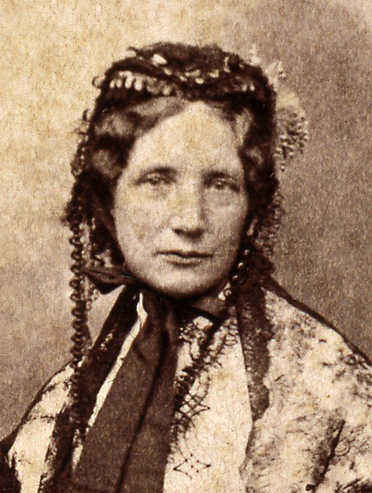

Harriet Beecher Stowe
Harriet Beecher Stowe was an American abolitionist and author of over 30 works, including Uncle Tom's Cabin. She was born in Litchfield, Connecticut on June 14, 1811, during the Antebellum Period. Stowe was a product of her time, being influenced by the Second Great Awakening of the 1830s and debates over gender roles, slavery, and religion. Uncle Tom's Cabin addressed these controversial topics, acting as a catalyst for the Civil War and making Stowe one of the most popular female authors of the nineteenth century.
Family
Stowe was born the sixth of eleven children to Reverend Lyman Beecher and Roxana Foote Beecher. Her mother was the educated and artistic granddaughter of a Revolutionary War general, while her father was a Presbyterian clergyman. Lyman Beecher took a stance against slavery, influencing his children to follow in his footsteps and bring justice to society. As a result, Stowe's brothers became ministers and abolitionists, and her sister Catharine opened the Hartford Female Seminary, one of the first major schools for women in the United States.
Lyman Beecher's religious teachings may have also influenced the connection between religion and slavery in Stowe's Uncle Tom's Cabin, where characters who are deeply religious change for the better, and characters who aren't religious are evil or advocate slavery.
Early life and education
When Stowe was five years old, her mother died of tuberculosis, and Lyman Beecher married Harriet Porter Beecher the next year. Catharine, who was eleven years older, became a mother figure to Stowe and raised her. Stowe also frequently visited her grandmother and played with her sibiling in Guilford, Conecticut.
Stowe began her education at Sarah Pierce's Litchfield Female Academy, where her father taught religion and students were encouraged to study academic subjects, rather than just the arts. At the time, Stowe began to take on writing as a hobby and held interest in the arts. She would graduate to her sister's Hartford Female Seminary in 1824, where she studied subjects that were typically not taught to women, such as Latin and math. Stowe also spent many hours composing essays and eventually became a teacher at the school after finishing her studies.
Early career
In 1832, Stowe and the rest of her family moved to Cincinnati, Ohio, where her father was appointed head of the Lane Theological Seminary. There, she joined the Semi-Colon Club where she met Calvin Ellis Stowe, a theology professor at the seminary. They married on January 6, 1836. Calvin supported Harriet's literary career and shared her sentiments on slavery. The abolitionist couple held connections in the Underground Railroad, even helping one of their servants that they discovered to be a runaway slave.
The Stowes had seven children; however, her 18-month old son died of cholera in 1849. Harriet experienced great sorrow and sympathized with other mothers whose children were sold into slavery. The event was one of the many inspirations for Uncle Tom's Cabin. The following year, the family moved to Brunswick, Maine, where Calvin became a professor at Bowdoin College.
Meanwhile, Harriet Stowe continued to publish short stories and essays, which allowed her to express her opinion on slavery and religion publicly. The Mayflower (1843) was a collection of her short stories about domestic life, leading to a sustainable writing career for Stowe. She regularly published her works in newpapers and journals, which allowed her to reach a general audience.
The road to Uncle Tom's Cabin
In 1850, Congress passed the Compromise of 1850 in an attempt to ease the political debate between slave and free states over the status of territory gained in the Mexican-American War. While slave trade was now banned in the District of Columbia, the stricter Fugitive Slave Act was a source of controversy. It declared that civilians must assist marshals in finding and escaped slaves, and any escaped slaves that were captured would be returned to their masters. Those found harboring escaped slaves would also face a penalty. Northerners were appalled, since everyone now indirectly supported slavery.
The National Era, an abolitionist newspaper, contracted Stowe the following year to pen a story about the horrors of slavery. Stowe used the opportunity to respond to the Fugitive Slave Act of 1850 and inform the public, resulting in Uncle Tom's Cabin; or Life Among the Lowly, published in over 40 installments. The work was based on slave narratives and the life of Josiah Henson, capturing the nation's attention. A book version was published in 1852 and quickly became a bestseller. It was met with a variety of reactions within its large audience, increasing the tension between the North and the South. In addition, Uncle Tom's Cabin gave Stowe financial security to continue writing.
Abraham Lincoln, on Harriet Beecher StoweSo you're the little woman who wrote the book that started this great war.
Later years
After the success of Uncle Tom's Cabin, Stowe continued to write and advocate her causes. Dred, A Tale of the Great Dismal Swamp (1856) was a stronger novel against slavery, while The Minister's Wooing criticized the Cavinist teachings Stowe was raised upon, favoring a more forgiving form of Christianity.
The Stowe family moved to Hartford after Calvin Stowe's retirement, where they remained for 23 years and built their dream home, called Oakholm. After the Civil War, the Stowes traveled south each winter to a house that they bought in Mandarin, Florida. They strove to educate Southern freed slaves, assisting Harriet's brother, Charles Beecher, in opening a school. Her novel Palmetto Leaves describes the culture, landscape, and people of the state.
Calvin Stowe's health began to decline, and he died in 1886. On July 1, 1896, Harriet Beecher Stowe died in her sleep at the age of 85 in Hartford, Conecticut. Her legacy lies in the landmarks dedicated to her and her many influencial works.
To learn more about Harriet Beecher Stowe, visit the Harriet Beecher Stowe Center.